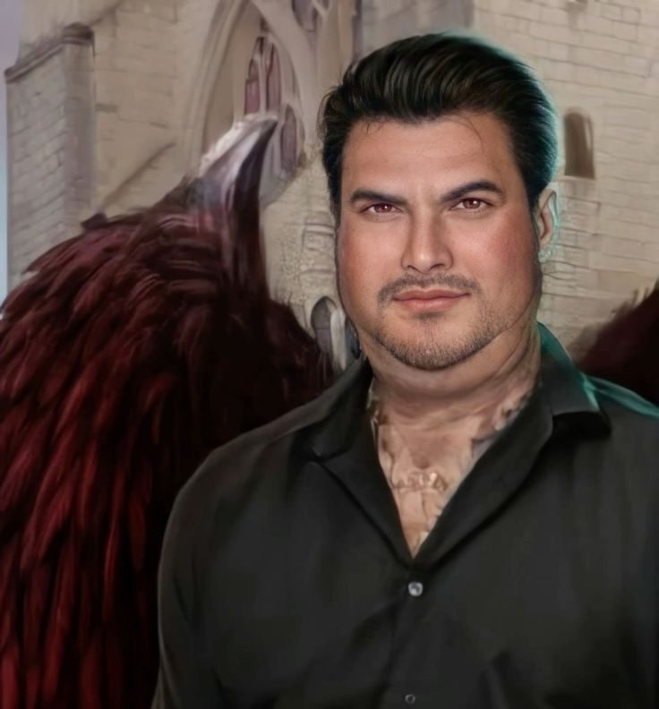
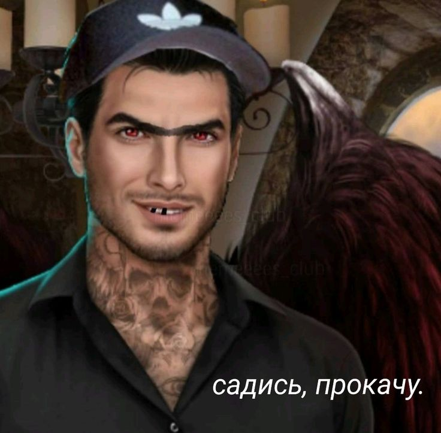
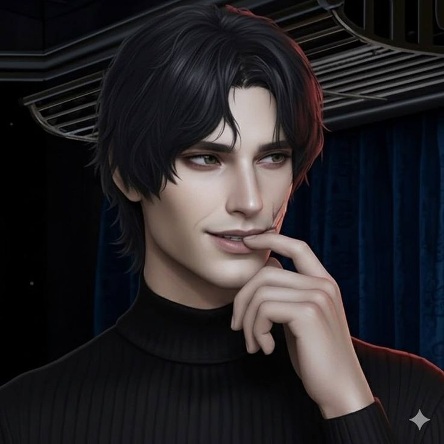

Мои фавориты в сн рса сн2 снр



описние фаворитов:
- Люцифер . - сын Сатаны, демон с тяжелым характером и скрытой ранимостью
- Давид - Уверенный, разговорчивый, дружелюбный, вспыльчивый и слегка хвастливый
- Ян - Скрытный и замкнутый Прагматичный и решительный Глубоко травмированный
© 2026 Сайт о фаворитах